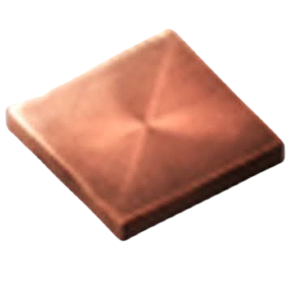

space age here
Factorio Information Central Archives(FICA)
This is a fanmade factorio "Archive", this is my pasion project so fell free to use.
These are the procesed basic materials, these are your most used materials in the game, almost everything comes from them:

Copper plates
These are the raw basic materials, most used materials in the game, you can use them to create basic procesed materials and some complex materials:
crafting recpies